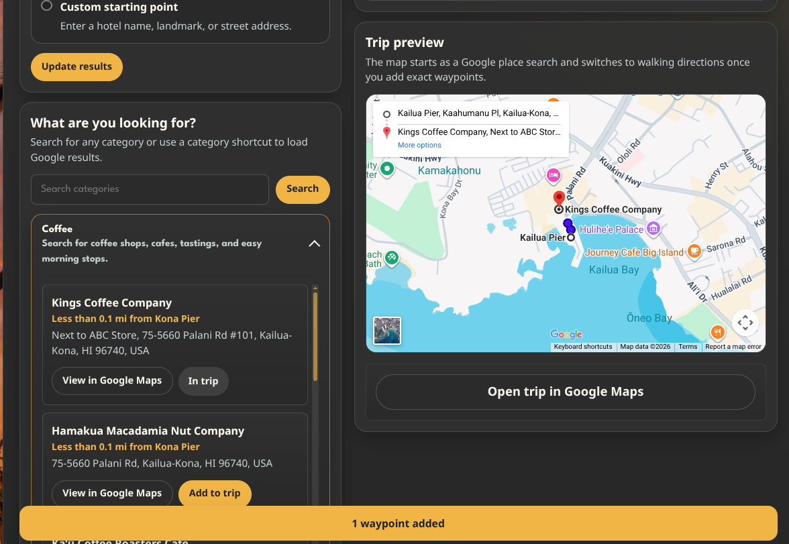

Description
Waypoints: Trip Planner adds a configurable trip-planning interface to a page or post. Visitors can search Google place results, add stops to a waypoint list, reorder their trip, preview the route when map embeds are configured, and open the finished route in Google Maps.
Installation
Built release zip
- Build or download the packaged
waypoints-trip-plannerrelease zip. - Upload it through the Plugins screen in WordPress.
- Activate the plugin. Built release zips include generated Composer autoload files.
Source checkout
- Copy or symlink this plugin directory as
/wp-content/plugins/waypoints-trip-planner/. - Run
composer installinside the plugin directory to generatevendor/autoload.php. - Activate the plugin through the Plugins screen in WordPress.
- Open Settings > Waypoints: Trip Planner and configure the required default location and Google API keys.
Configuration
Manage settings in Settings > Waypoints: Trip Planner.
Current settings include:
- Default location label, address/search phrase, latitude, longitude, and Place ID.
- Allowed start modes, max waypoints, result count, distance unit, map preview, and Google Maps handoff toggles.
- Editable categories and interface copy.
- Browser-facing Maps Embed API key.
- Server-side Places API and Geocoding API keys.
- Google API timeout and cache TTLs.
- Rate-limit value and trusted proxy CIDRs for public endpoint protection.
- Admin-only API call counter for troubleshooting request behavior.
Screenshots

External services
Waypoints: Trip Planner uses Google services for place results, place details, geocoding, embedded map previews, and Google Maps handoff links.
The plugin can send data to Google from the server when:
- a visitor runs a category or custom place search
- the plugin geocodes a configured or visitor-provided starting area
- the plugin resolves selected waypoint place details
The plugin can also send data to Google from the visitor's browser when:
- the frontend loads a Google Maps Embed preview from
https://www.google.com/maps/embed/v1/searchorhttps://www.google.com/maps/embed/v1/directions - a visitor opens the generated Google Maps handoff link
Depending on the interaction, data sent to Google can include:
- search phrases
- configured or visitor-provided starting locations
- selected Google Place IDs
- visitor IP address and the browser-facing Maps Embed API key when the browser loads an embedded map preview
- origin text plus waypoint and destination Place IDs when the browser loads an embedded directions preview
- route waypoint information needed to build map previews or handoff URLs
Google provides these services. Review their privacy policy and Google Maps Platform terms.
Frequently Asked Questions
What do I need before using it on a live site?
Configure the required default location and Google API keys in Settings > Waypoints: Trip Planner. For best results, restrict Google API keys in Google Cloud Console and test the planner flow on a staging site before adding it to a public page.
How do I display the planner?
Use the Waypoints: Trip Planner block in the block editor or add [waypoints] to a page, post, or Shortcode block. The optional action_url shortcode attribute and Action URL block setting can submit planner updates to a specific page URL.
Where is the developer documentation?
See the repository docs/ directory for installation, usage, admin, release, architecture, settings, security, and troubleshooting notes.
Changelog
1.0.2
- Updated the WordPress.org submission name and slug to Waypoints: Trip Planner.
1.0.1
- Added an admin control for briefly revealing saved Google API keys while checking copied values.
- Hardened Google API key settings against browser autofill and non-key values.
1.0
- Renamed the original public plugin surface to Waypoints, including the REST namespace, block name, preferred shortcode, release metadata, and package artifact.
- Added WordPress.org submission-readiness checks covering PHP quality, PHPStan, browser smoke tests, WordPress Plugin Check, release packaging, and metadata validation.
- Hardened the release artifact so it ships as a single
waypoints/plugin directory with production Composer autoload files and normalized file permissions. - Added admin-only API request counting for troubleshooting Google API usage.
- Added contributor credits and clearer production installation, configuration, and external-service documentation.
0.5
- Added block-editor and shortcode entry points that share the same planner renderer.
- Added admin-editable categories and interface copy settings.
- Added REST-powered planner interactions, rate limiting, and Google API admin tools.
- Added a reproducible release zip builder and manual release-process documentation.
- Added color mode controls, Noto Sans assets, and a cleaned-up settings interface.
- Added an upgrade cleanup that prunes removed interface-copy settings from existing installs.
0.1.0
- Initial plugin scaffold (GH Issue #20): directory structure, main plugin file, activation/deactivation hooks, uninstall routine, PSR-4 autoloading.